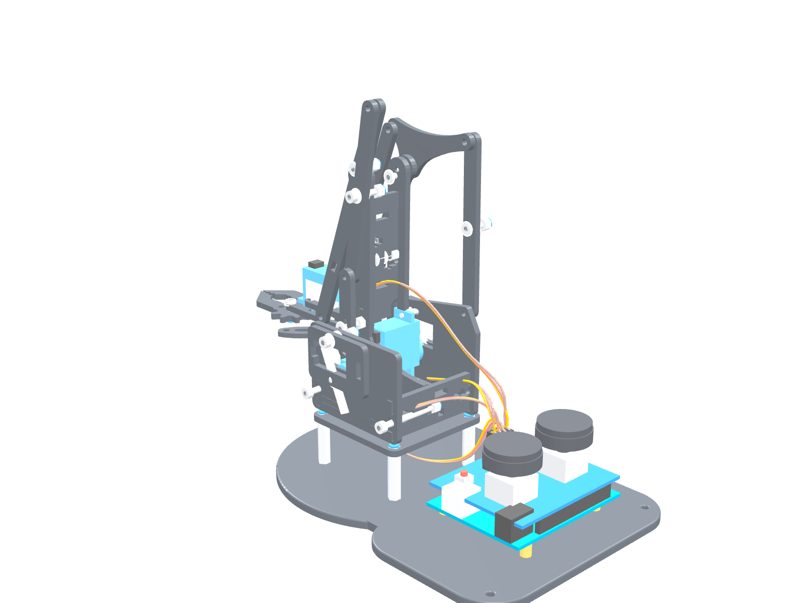
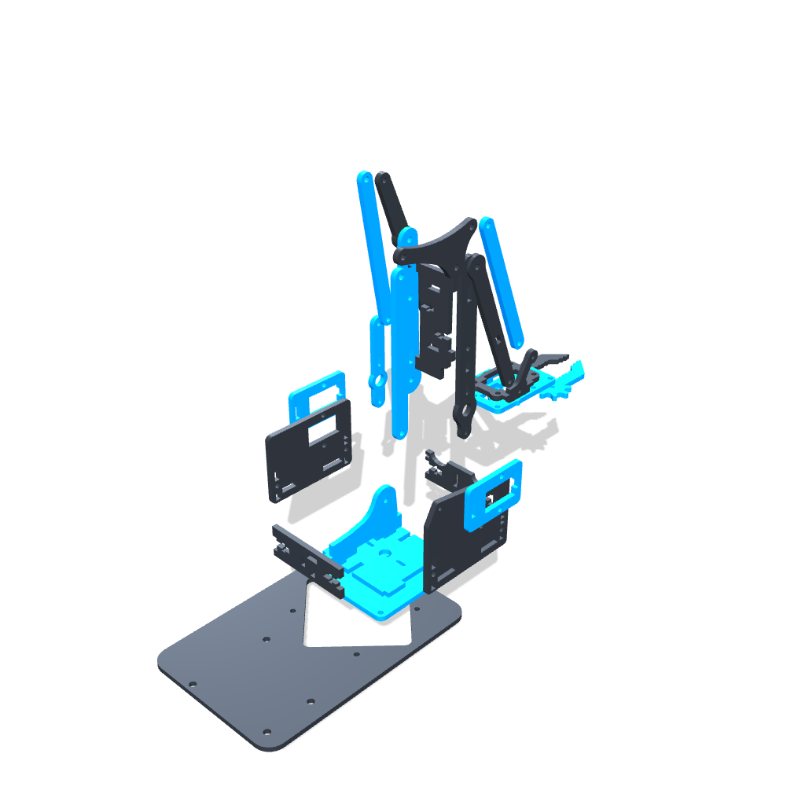

Especificação completa de componentes, cinemática de paralelogramo, lista quantitativa de materiais (BOM), catálogo tridimensional e guia minucioso de montagem passo a passo.

Graus de Liberdade
4 Eixos (Yaw, Pitch, Elbow, Claw)
Peças Impressas 3D
28 Componentes STL
Volume de Impressão
256 × 256 × 256 mm (A1)
Atuadores Suportados
4x Servomotores SG90 / MG90S
Engenharia Mecatrônica & Otimização de Fatiamento
Documento Técnico Nº BR4D-2026-A1 • Página 1 de 16
BAMBU A1Braço Robótico 4-DOF • Manual de Fabricação
DOC-BR-01 • SEÇÃO 01
1
Visão Geral do Conjunto & Cinemática (braco_completo_original.stl)
Inspeção ortogonal e isométrica do modelo montado, envelope cinemático e arquitetura de paralelogramo.
FIGURA 1.1 — Conjunto Completo Montado (Perspectiva Isométrica Realista)
Render do modelo GLB completo: 28 peças impressas, 4 servos SG90, Arduino Uno + Shield, 4 espaçadores da base e chicote elétrico.
FIGURA 1.2 — Vista Explodida Estrutural dos Componentes

Vetorização de desmontagem mostrando as linhas de inserção dos 4 servomotores e articulações.
O mecanismo adota tirantes de paralelogramo acionados por servomotores concentrados na base giratória. Esta arquitetura reduz a inércia rotacional transferindo o peso dos atuadores para a mesa inferior. Capacidade de Carga Útil (Payload Calibrado): 35 g a 40 g com atuadores SG90 (limite de stall térmico de 0.17 Nm no ombro) ou até 100 g mediante upgrade dos servos 2 e 3 para MG90S metálicos. Envelope de Movimento com Margem de Segurança: Eixo 1 (Base/Yaw) 0° a 180° • Eixo 2 (Ombro/Pitch 1) 35° a 145° (anti-colisão com torre 09) • Eixo 3 (Cotovelo/Pitch 2) 25° a 150° (anti-colisão com biela 05) • Eixo 4 (Garra/Claw) 0° a 85° (abertura útil de 50 mm).
BAMBU A1Braço Robótico 4-DOF • Manual de Fabricação
DOC-BR-01 • SEÇÃO 02
2
Lista Completa de Materiais (Bill of Materials • BOM)
Relação consolidada e reconciliada de parafusos M3, porcas, servomotores, eletrônica de controle e insumos de impressão.
RECOMENDAÇÃO DE QUALIDADE BAMBU LAB A1: Habilite a Calibração Dinâmica de Fluxo (Flow Dynamics Calibration / Pressure Advance) antes de iniciar o Prato 2. As tolerâncias finas das engrenagens da garra (peças 20, 21 e 26) dependem de uma extrusão uniforme sem sobre-extrusão nos cantos vivos.
BAMBU A1Braço Robótico 4-DOF • Manual de Montagem
DOC-BR-01 • ETAPA 01
5
Etapa 1: Chassi, Base & Mecanismo de Rotação (Eixo 1 - Yaw)
Montagem da fundação estrutural, berço de rotação e acoplamento da mesa giratória ao Servomotor 1.
PASSO 1.1
Inserção das Porcas Cativas M3 no Chassi e Travessas
Insira 4 porcas sextavadas M3 nos alojamentos hexagonais na face inferior da peça 01_Base_Chassi_Inferior e 2 porcas em cada extremidade das travessas 17_Travessa_Reforco_Base_Frontal e 18_Travessa_Reforco_Base_Traseira. Caso o encaixe esteja justo, utilize um parafuso M3 com arruela para puxar a porca até o fundo do nicho (técnica nut-pull).
PASSO 1.2
Instalação dos 4 Espaçadores Metálicos da Base & Travessas
Rosqueie os 4 espaçadores metálicos M3x24mm nos 4 cantos da base chassi inferior (01) através da face inferior utilizando parafusos M3 com arruelas de aço. Esses 4 espaçadores elevam o conjunto do braço e mesa giratória garantindo vão de 24mm livre para alojamento do servomotor da base. Em seguida, fixe as travessas frontal (17) e traseira (18) utilizando 4 parafusos M3x12mm.
PASSO 1.3
Instalação do Berço e Servomotor SG90 de Rotação (Servo 1)
Encaixe o Servomotor SG90 no nicho retangular da peça 16_Berco_Servo_Rotacao_Base com o eixo estriado voltado para CIMA. Passe o cabo de sinal pelo rasgo lateral para não sofrer prensamento. Aparafuse o berço (16) sobre a base (01) utilizando 4 parafusos M3x10mm.
PASSO 1.4
Acoplamento do Horn na Mesa Giratória (Turntable)
Pegue a cruzeta plástica de 4 pontas (horn) do kit SG90 e encaixe-a no relevo correspondente na face inferior da 12_Mesa_Giratoria_Turntable. Sobreponha a peça 25_Trava_Horn_Servo_Base e trave com 2 micro parafusos auto-atarraxantes 1.7×6mm. A trava 25 impede que a cruzeta deslize ou escape durante rotações rápidas.
PASSO 1.5
Centralização de 90° e Travamento Axial do Eixo Yaw
ATENÇÃO CRÍTICA: Antes de encaixar a mesa, conecte o Servo 1 ao Arduino e envie o pulso de neutro (90° / 1500 µs). Com o servo travado em 90°, encaixe a Mesa Giratória (12) perfeitamente alinhada para a frente (eixo X). Insira o parafuso central M2×4mm pelo orifício superior da mesa e aperte até fixar no estriado.
Servo 1 (Yaw)
DICA DE AJUSTE: Teste o giro manual da mesa giratória (com o servo desenergizado). O conjunto deve rotacionar suavemente 90° para a esquerda e 90° para a direita (180° de curso total) sem atrito excessivo com o chassi.
PASSO 2.1
Instalação do Servo 2 (Elevação do Ombro) na Torre Direita
Pegue a 09_Torre_Suporte_Servo_Direita. Encaixe o segundo Servomotor SG90 pelo lado interno da torre, de modo que o eixo estriado de saída atravesse o nicho e fique exposto pelo lado externo direito. Aparafuse as abas de fixação do servo utilizando 2 parafusos ponta fina originais do kit.
PASSO 2.2
Instalação do Servo 3 (Articulação do Cotovelo) na Torre Esquerda
Pegue a 11_Torre_Suporte_Servo_Esquerda. Encaixe o terceiro Servomotor SG90 pelo lado interno da torre, com o eixo estriado saindo para o lado externo esquerdo (configuração em espelho em relação à torre direita). Fixe as abas laterais do servo com 2 parafusos originais.
PASSO 2.3
União Estrutural com o Espaçador Central e Parafusos M3x30mm
Posicione a peça 14_Separador_Espacador_Central_Base entre as duas torres. Roteie os cabos de ambos os servos por dentro do canal central do espaçador, direcionando-os para a saída inferior. Atravesse 2 parafusos longos M3x30mm pelos orifícios da torre direita (09), cruzando o espaçador (14) até a torre esquerda (11). Rosqueie 2 porcas Nyloc M3 e aperte com firmeza.
PASSO 2.4
Fixação das Torres na Mesa Giratória (12)
Encaixe as espigas inferiores das torres nos rasgos guias da 12_Mesa_Giratoria_Turntable. Pela face inferior da mesa, passe 2 parafusos M3x10mm e trave com porcas sextavadas. A coluna de torres está agora solidária à mesa giratória.
PASSO 2.5
Instalação das Bielas dos Servos (22 e 23)
Com os servos 2 e 3 energizados em neutro de 90° (1500 µs), encaixe as cruzetas com alinhamento rigoroso:
• Servo 2 (Ombro/Direito): Horn alinhado a 90° (perpendicular), acoplado à biela 22 para curso de 35° a 145°.
• Servo 3 (Cotovelo/Esquerdo): Horn alinhado verticalmente a 90°, acoplado à biela 23 para curso de 25° a 150°.
Alinhamento Servos 2 & 3
CUIDADO COM CABOS: Certifique-se de que os cabos dos servos não fiquem prensados entre o espaçador 14 e as paredes das torres. Deixe uma leve folga para acomodar a rotação completa do eixo Yaw sem tracionar a fiação.
BAMBU A1Braço Robótico 4-DOF • Manual de Montagem
DOC-BR-01 • ETAPA 03
7
Etapa 3: Cinemática do Braço Principal & Paralelogramo Duplo
Montagem das hastes mestras, antebraço, balancim triangular e tirantes de paralelismo cinemático.
PASSO 3.1
Montagem do Braço Principal Direito (Mancal do Ombro)
Posicione o 07_Braco_Principal_Direito no mancal da torre direita (09). Insira 1 arruela de nylon M3 entre a torre e o braço para evitar atrito PLA-PLA. Passe um parafuso M3x16mm de fora para dentro e rosqueie uma porca auto-travante Nyloc M3. Conecte a 05_Haste_Acionamento_Servo_Braco entre a biela do servo (22) e o furo excêntrico do braço 07 com parafuso M3x12mm e arruela de nylon.
PASSO 3.2
Montagem do Braço Principal Esquerdo e Tirante Longo
Articule o 02_Braco_Principal_Esquerdo na torre esquerda (11) com parafuso M3x16mm e arruela de nylon. Em paralelo, monte a extremidade inferior do 03_Tirante_Paralelogramo_Longo (103mm) na biela do servo esquerdo (23) usando parafuso M3x12mm e porca Nyloc.
PASSO 3.3
Instalação do Balancim Triangular (10) — O Coração Cinemático
O 10_Balancim_Triangular_Articulador coordena o paralelismo. Ele possui 3 pontos de articulação:
• Pivô 1 (Centro): Conecte ao furo superior do braço principal esquerdo (02) com parafuso M3x12mm.
• Pivô 2 (Traseiro): Conecte à extremidade superior do tirante longo (03).
• Pivô 3 (Superior): Conecte o 13_Tirante_Superior_Garra e o 04_Tirante_Paralelogramo_Medio.
PASSO 3.4
Articulação do Cotovelo & União do Antebraço
Una o 06_Antebraco_Esquerdo e o 08_Antebraco_Direito na articulação do cotovelo do braço principal. Utilize um parafuso M3x16mm, colocando arruelas de nylon entre cada elemento em movimento relativo. Conecte o tirante intermediário (04) na articulação central do antebraço.
PASSO 3.5
Ajuste Fino de Torque nas Porcas Nyloc
REGRA DE OURO DAS PORCAS NYLOC: Nunca aperte as porcas até prensar o plástico. Rosqueie até que o anel de nylon engate completamente na rosca do parafuso, garantindo zero folga axial, mas permitindo que as hastes girem livremente sob a gravidade quando desengatadas dos servos.
TESTE DE PARALELISMO: Segure o conjunto da base e eleve o braço principal manualmente. A haste terminal onde a garra será acoplada deve permanecer rigorosamente horizontal em qualquer altura do curso mecânico.
PASSO 4.1
Instalação do Servomotor no Suporte da Garra (Servo 4)
Encaixe o quarto Servomotor SG90 no 24_Suporte_Encaixe_Servo_Garra (Preto). Fixe as abas do motor com os micro parafusos originais. Una o suporte 24 à peça 19_Garra_Base_Suporte_Fixo (Azul) utilizando 2 parafusos M3x10mm e porcas Nyloc. O eixo estriado do servo deve apontar para frente.
PASSO 4.2
Calibração do Servo em 0° (Posição Fechada) e Alavanca Acionadora (26)
Conecte o Servo 4 ao Arduino e envie o pulso de 0° (1000 µs), que representa a garra 100% FECHADA. Com o servo calibrado em 0°, encaixe a alavanca 26_Engrenagem_Acionadora_Garra no estriado e aperte o micro parafuso central M2×4mm. Mecanismo Compliant: Não force o fechamento além do toque para não induzir corrente contínua de stall.
Servo 4 (Garra)
PASSO 4.3
Sincronismo dos Dedos Móveis (Engrenamento Simétrico Preto & Azul)
PASSO CRÍTICO: Posicione o 20_Garra_Dedo_Movel_Direito (Azul) e o 21_Garra_Dedo_Movel_Esquerdo (Preto) de modo que as duas pontas da pinça fiquem em contato direto (fechadas). Engrene os setores dentados de ambos os dedos — a alternância entre o dente preto e o dente azul permite confirmar visualmente o alinhamento de cada dente.
PASSO 4.4
Fixação dos Eixos dos Dedos e Aplicação de Lubrificante
Passe 2 parafusos M3x12mm com arruelas de nylon pelos pivôs dos dedos móveis na base da garra (19). Rosqueie porcas Nyloc M3 na face oposta até eliminar folga de balanço sem prender os dentes. Aplique uma leve gota de graxa de silicone ou vaselina nos dentes das engrenagens plásticas.
PASSO 4.5
Instalação da Guia de Contenção e Biela Curta (27 e 28)
Instale a 27_Guia_Articulacao_Garra e a 28_Biela_Articulacao_Curta sobre os dedos usando 2 parafusos M3x8mm. A guia 27 impede que os dentes das engrenagens sofram desengrazamento quando a pinça apertar objetos com força máxima.
PASSO 4.6
Acoplamento Final da Garra ao Antebraço do Robô
Una a base da garra montada à peça 15_Suporte_Cabeca_Garra com 2 parafusos M3x10mm. Por fim, conecte o cabeçote (15) às extremidades do antebraço (06 e 08) e ao tirante superior (13) com 2 parafusos M3x12mm e porcas Nyloc.
BAMBU A1Braço Robótico 4-DOF • Comissionamento
DOC-BR-01 • SEÇÃO 06
9
Calibração dos Servos, Esquema Elétrico & Código de Teste
Pinagem oficial no Arduino Uno com Sensor Shield v5, código C++ de controle e checklist final de validação.
Pinagem Oficial das Conexões (Arduino Uno + Sensor Shield v5)
Atuador / Sensor
Pino Arduino
Alimentação (VCC / GND)
Posição Inicial de Neutro (90°)
Faixa Operacional
Servo 1: Giro Base (Yaw)
Pino Digital D9 (PWM)
Barramento Externo 5V Shield
90° (Apontando reto para frente)
0° a 180°
Servo 2: Ombro (Shoulder)
Pino Digital D10 (PWM)
Barramento Externo 5V Shield
90° (Braço mestre a 45° elevação)
30° a 150°
Servo 3: Cotovelo (Elbow)
Pino Digital D11 (PWM)
Barramento Externo 5V Shield
90° (Antebraço nivelado no horizonte)
20° a 160°
Servo 4: Garra (Claw)
Pino Digital D6 (PWM)
Barramento Externo 5V Shield
0° (Pinça completamente fechada)
0° a 90° (Abertura 50mm)
Joystick 1 (Base e Ombro)
Pinos A0 (X) e A1 (Y)
5V e GND do Arduino Uno
Leitura central analógica ~512
0 a 1023
Joystick 2 (Cotovelo e Garra)
Pinos A2 (X) e A3 (Y)
5V e GND do Arduino Uno
Leitura central analógica ~512
0 a 1023
Código-Fonte Arduino C++ (Sketch de Centralização e Teste com Suavização)
// Braço Robótico 4-DOF • Sketch de Teste & Calibração (Bambu Lab A1 Edition)
#include <Servo.h>
Servo sBase, sOmbro, sCotovelo, sGarra;
float angBase = 90, angOmbro = 90, angCotovelo = 90, angGarra = 0;
void setup() {
sBase.attach(9); sOmbro.attach(10); sCotovelo.attach(11); sGarra.attach(6);
sBase.write(90); sOmbro.write(90); sCotovelo.write(90); sGarra.write(0); // Posição de repouso segura
Serial.begin(115200);
}
void loop() {
int joy1X = analogRead(A0); int joy1Y = analogRead(A1);
int joy2X = analogRead(A2); int joy2Y = analogRead(A3); // Filtro de zona morta (deadzone) e incremento com rampa suave
if (abs(joy1X - 512) > 60) angBase += (joy1X - 512) * 0.003;
if (abs(joy1Y - 512) > 60) angOmbro += (joy1Y - 512) * 0.003;
if (abs(joy2Y - 512) > 60) angCotovelo += (joy2Y - 512) * 0.003;
if (abs(joy2X - 512) > 60) angGarra += (joy2X - 512) * 0.004; // Limites de segurança mecânica
angBase = constrain(angBase, 5, 175); angOmbro = constrain(angOmbro, 35, 145);
angCotovelo = constrain(angCotovelo, 25, 155); angGarra = constrain(angGarra, 0, 85);
sBase.write((int)angBase); sOmbro.write((int)angOmbro);
sCotovelo.write((int)angCotovelo); sGarra.write((int)angGarra);
delay(15); // Frequência de atualização estável (~66 Hz)
}
Checklist de Validação & Comissionamento Mecânico
☑ Giro Livre: Articulações giram sem emperramento mecânico.
☑ Jumper Shield: Jumper PWR/VCC removido para isolar a fonte 5V.
☑ Arruelas de Nylon: Todas as 14 juntas contêm arruelas de baixo atrito.
☑ Fonte Externa: Alimentação 5V 5A conectada no borne com capacitor 1000 µF / 16V.
☑ Organização de Cabos: Fios agrupados com abraçadeiras sem puxar.
☑ Sincronismo da Garra: Dedos fecham perfeitamente no centro.
☑ Fixação na Bancada: Pés em TPU ou parafusos instalados no chassi.
AVISO FINAL DE OPERAÇÃO: Nunca force as articulações com a mão enquanto os servomotores estiverem energizados. O esforço reverso danifica imediatamente os dentes de engrenagem internos dos micro servos SG90.